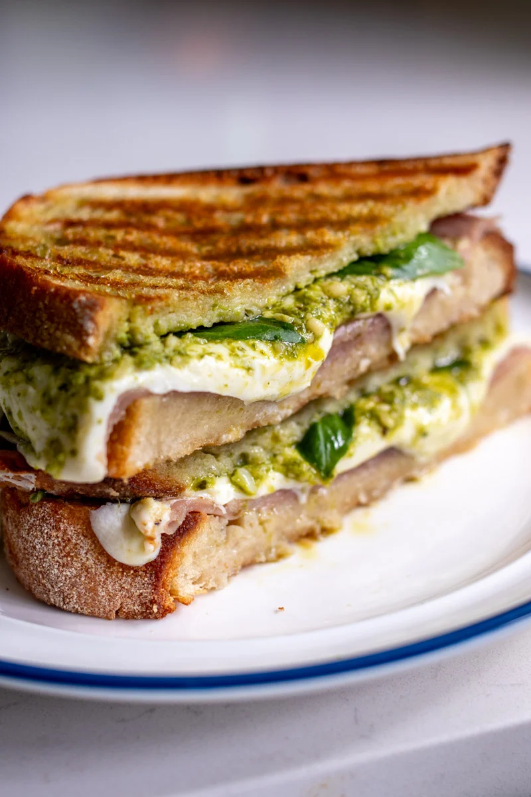

Lou Ferrigno's Panini

Description
This is a hot pressed sandwich made with sandwich stuff, I mean it's alright ya know?
Ingredients
- Bread
- Pesto sauce
- Gabbagol
- Cheese
- Olive oil
- Fresh basil
Steps to make the sammich
- Grab your bread and spread some sauce on it
- Heat up that Panini press
- Spread that pesto all over the bread on both pieces
- Now layer the cheese and meat
- Close it up, and drizzle that olive oil on both sides of the sammy
- Put a little oil on the plancha
- plop that sandwich in the press
- Let it sizzle for like 5 minutes
- Take it out, let rest and enjoy